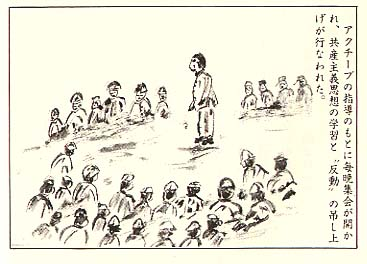

|
第十五 洗脳の嵐
第八ラーゲルは大集団部隊で、今までの小
じんまりした部隊とは、様変りした寄り合い
の大部隊だった。
約六百人の隊員が、民主同盟という機構の
核を作って、ひしめき合っていた。
収容所長は、若い日本兵士で所長の座に君
臨して采配を振い、日本人民革新自治制のラ
ーゲルだった。
ソ連人所長は影武者となり、所長権限を、
一時的に委任したのであろうと思われた。
その若い兵士所長を取り巻いて、アクチブ
団が部隊幹部となり、文化部長、生活部長、
労働部長、教宣部長、青年部長などの要職を
占めていた。
日本人所長は、戦前に組織労働組合の運動
経験者であると聞いた。
彼は釜田某と名乗る一見真面目そうな、二
十七－八才位の上等兵だった。第一回タシケ
ント地区共産党学校修了者で、地区の「オル
グ」であるとも云われていた。
共産党学校は、ハバロフスクに本拠を持つ、
日本共産党が創設した学校の一つになってい
た。タシケント周辺地区には、この種学校が、
幾つか設立されていた。この学校で、マルク
ス、レーニン主義の学習を修了した者は、何
れも所謂筋金入りの党員として、ソ連当局か
ら手厚い支援をうけて、収容所の指導権を掌
握することになっていた。
従ってここでは、若い上等兵所長を頂点と
して、そのまわりを「アクチブ」達が取打巻
いて、独裁体制を確立しようとして頑張って
いた。
彼等は贅沢な食事を保証され、新品同様の
将校服を着用し、重労働から免除される等、
俘虜としては最高の優遇を受けていた。
この指導集団の下に、何の権限も有しないノル
マだけで働く所謂働き蜂同様の一般大衆兵の集団が
いて、この二つの階層に分れていたのであった。
一般大衆兵は、特権階層のアクチブ団の命
令に逆らうことなく、要領よく働いてソ連民
主運動に順応することが、早期帰還につなが
る道であり、重労働から少しでも逃れる道で
もあることを、良く弁えていた。
夕食後は、毎日のように、ラーゲルの広場
に造られた演台を中心に、集合を呼びかけ、
学習会と、反省会が繰り返し開かれた。
集会では、先ず古参の民主連盟員が、演台
に立って、アジ演説をぶつのであった。
「本日は同志諸君に、民主主義教育の総仕
上げをする。
この目的は、一人前の共産党員として、日
本の民主主義運動に、不屈の闘魂をもって、
献身できる同志を育てることが第一の目的で
ある。
これが為には、日本島上陸後、宮城二重橋
を渡り皇居に向って、
スターリン元師閣下万歳！
日本人民共和国万歳！
天皇制打倒万歳
を絶叫し得ることだ。如何なるアメリカの
日本占領政策があろうとも、また日本国政府
の弾圧があろうとも、屈することなく、我が
赤旗のもとに、命をなげ出す覚悟ができない
と、絶対に日本へは帰れんのだ！」
聴衆は一斉に拍手を送った。そうして同調
した。
「そうだ、そうだ、二重橋を渡るのだ、天
皇制打倒と叫ぶのだ。」
すると今度は、ドスの利いた古参兵が、大
衆の中から、
「偽せ民主主義連盟員を叩き出せ！」
と叫んだ。大衆は一斉にその男に視線を集
中し、何か謀反行為が起きたのではないかと、
異様な雰囲気に包まれた。古参兵は大勢の仲
間を掻き分けて、演台に登り、
「中川補充兵は、自分は民主連盟のアクチ
プだと称し、作業ノルマは怠りながら、オル
グからの命令だと称して、炊事班からパン三
百ｸﾞﾗﾑを余計にせしめたと云うではないか。奴は
偽せ民主主義連盟員だぞ、奴を人民裁判にか
けろ！」
と絶叫して提訴した。
「そうだ、そうだ、おれ達も知っているぞ、
偽せ民主主義連盟員を装っている奴を、全部
摘み出せ！」
古参兵と仲間らしい同年輩兵が、合槌を打
って、場内は騒然となった。まだ充分大衆討
議もせぬままに、古参兵仲間の一人が、
「彼奴に、一週間の便所掃除の使役をさせ
ろ！」
と宣言するのだった。
学習に参加した大衆は、もう思考判断や平
常な脳細胞の働きを、喪失して、烏合の衆と
化していた。
「一週間は短かすぎるぞ、一ケ月間やらせ
ろ」
「そうだ、そうだ、異議なし・・・・」
と絶叫して、人民裁判の判決にしようとす
るのだった。
民主主義連盟員達は場内を鎮め、民主的秩
序を立て直そうとしたが、大衆は騒乱して食
物の怨みを晴そうと、静まる様子はない。こ
の正気を逸脱した騒動を聞きつけたソ連収容
所良は、演台に飛び乗り、
「ソ連では、今日は人民裁判は禁止となっ
ている。裁判は凡て、ソ連憲法に基づいて行
われるのだ。今夜の集会は直ちに解散しろ、
人民裁判の名を借りた事柄は、全部無効だ！
これから、このような集会は一切禁止する。」
と拳を振り上げて解散を宣言した。
参集者は一斉に散らばって、収容所の灯は
消え、この一種の猛芝居は幕となった。
中川一等兵は、便所掃除懲罰を免がれて、
胸を撫下したのであった。
共同便所は、深さ二．五ｍ縦横共に約十ｍ
もあるプールの様な壕に、電信柱位の大きな
横木を何本も渡して、それに跨がって垂れ流
す方式になっていた。
清掃は、横木に付着している汚物を、落さ
なければならない。誤まって横木に足を滑ら
して、糞尿のプールに陥ちこんだら、どんな
に救助む求めても助けに来る者は一人もいな
いだろう。まして食物の怨があったら、仮に
居合せていても危険をおかしてまで、手を貸
す者はいないだろう。
一等兵はそれを思って、悲しくも観念して
いたであろうが、判決は無効で何よりだった。
プロレタリア独裁の国では、思想と実践行
動が強く求められる。口先だけの弁論だけで
は、反動扱いになり、反体制分子ともなる。
民主連盟員同志間にも、思想と実践行動が不
調和の者は、きびしく批判され反省会で吊し
上げられた。
重労働から免除を求めたり、贅沢な食事の
保全を守ったりするため、アクチブ同志間に
も、権力斗争が間断なく、繰り返えされてい
た。
アクチブ間での反省会では、しばしば同志
の追い陥しがあり、陥された者は、一般大衆
並のノルマ労働に狩り出される。これはアク
チプの浄化作用であり、筋金入りの共産党員
への道は険しかった。
一般大衆は、スターリン万歳を念仏のよう
に唱えてさえしておれば、一応ソ連体制信奉
者として、帰還仲間に入れてくれそうだった。
アルマアタ地区から転属して私の作業隊に
来た、杉山兵長が云った。
「隊長さん、自分はアルマアタ効外に在る
コルホーズで農作業をしてきました。そこの
収容所は、こんな洗脳運動どころではなかっ
たのです。」
と告白するのだった。
「どんな洗脳運動だったかね、洗脳にも、
手段方法等が違うのかね。」
すると彼は納々と話し出した。
「それは、もっと辛辣、非道の洗脳運動で
したよ・・・」
食堂の入口に掛かっていた縄暖簾を潜ると、
そこにはドラム缶で造った精巧な実物大の人
間像が立っていた。それは帽子を被った天皇
に擬して作った像だった。自分は天皇さまの
顔を見たことがなかったが、皆が模擬して作
った天皇さまの像だと云うのです。像のお腹
には白ペンキで、
「天皇ひろひと」と書いてありました。
天井から吊らされた棍棒には、叩き棒と誌
されてあった。この叩き棒で「天皇ひろひと」
と書いてあるお腹を叩かなければ、食堂には這
入れないことになっていて、民主連盟員が、
見張っているのです。
この像の横には、これもまた白ペンキで、
「天皇ひろひと、ぶっ倒せ・・・・」
と大書してあって、叩くときはこの文句を
大声で唱えて、叩けと添書までしてあった。
自分は天皇陛下に、こんな不敬なことをす
ると、先ず自分のご先祖様にも申し訳けがな
い。そうして神罰を受けること必定と、怖れ
戦いたのであります。
しかし毎日目がくらむ程の空腹に耐え忍ん
でおり、食堂に行けぬことは、餓死すること
と同じであります。心の中で手を合わせ、
「何卒天皇陛下さま、お許し下さい。帰国
した暁には、きっと陛下に対し奉り、敗戦の
お詫びを申し上げ、粉骨砕身して忠勤を励み、
皇恩の万分の一でもお返し致します。今はソ
連民主主義者共が、強制しますので、しばら
くご辛抱願います。」
と心に泣いて、思い切り呪文を唱えて、畏
れ戦きながら叩いたのであります。これが一
日三回ですから、三ケ月で約二百七十回も叩
いたことになります。
やっと斯んな苦脳の毎日から解放されて、
当地に転属して来た次第です。今ようやくあ
の呪文からも解放されて、重圧から逃れまし
た。ホッとしているところです。畏れ多いこ
とをしたと、後悔しております・・・。」
と言って、心から憾悔しながら、頭を掻く
のだった。この話を聞いて、
「畏れ多いことだと思うが、終戦詔勅のお
言葉を思い出すと、きっと陛下はお許し下さ
るよ。お前はやむを得ず、強制されたのだか
らね」
杉山兵長は、
「お年寄りの隊長どのが、そう云ってくれ
るなら、自分は荷が軽くなったようで、安心
しました。」
と云って、無精髭の顎を大きく突き出して
笑った。
この年の春も過ぎ、からりと晴れた日が、
また続いた。澄切った青空の毎日だった。
こんな日照が続いても、タシケント地区は、
水不足はなかった。水道の蛇口は出し放しの
処もあったが、節水などソ連人で言う者はい
なかった。
天山山脈か、パミル高原の雪解け水かが、
地底に潜り込んで、水資源となっている為め
だろか、不思議だった。
西の方のイランとの国境沿いに在る、アシ
ハパートの岩塩砂漠地帯から、転属してきた
ソ連労働者の話では、あちらはバケツ一杯の
水が、五ループもする高値だと語った。
勿論日本俘虜兵は、岩塩混りの水を飲んで
胃腸を損い、それに栄養不良で半数は死んだ
とも云う。仕事は石切り作業で懲罰労働と同
じであった。どうせ生還は望めないと諦めた
部隊は、潔よく天皇陛下万歳を三唱して、割
腹して果てようとした部隊もあった。
隊長はこの旨をソ連側に申し出て、腹切り
の許しを請うた処、ソ連側は驚き、
「侍（サムライ）腹切（ハラキリ）は最も
よくない。止めてくれ。」
と云って全部隊を、タシケント地区に移動
させたとも伝えられた。
当タシケント地区は、他地区に比べて、自
然環境に恵まれ、農作物は豊富で、西瓜、ブ
ドウ、メロンなど糖度の高い果物の特産地だ
った。土地は肥沃で果てしない内陸部であっ
た。
甘いメロンの香りは、時としては風に乗っ
て、数キロ先まで匂った。嗅くだけでも仕合
せと思うのだった。
しかし民主運動は、日毎に陰湿になった。
演説台を中心にした野外大衆討論会や、反省
会は一応禁止されたが、室内での学習会は、
断続的に行われ、将校には必ず出席参加を要
請してきた。
夕食後の一刻は疲労のため、洗脳運動にか
かわる余裕とてなく、体力的にも限界だった。
若い民主連盟員達は、共産主義啓蒙活動に情熱
を傾けていた。彼等は五百ｸﾞﾗﾑの黒パンを飽食
して、血色がよくなり活気が増していた。
祖国ソ連の信奉者となった若者達の学習会
は、何時も討論事項が決まっていた。
「ソ連五ケ年計画達成に、日本兵はどうし
ても参加する義務がある。何故ならソ連民主
主義国が富強になることは、取りも直さず日
本民主主義社会の繁栄に直結することになる
からだ。そうして我等プロレタリヤ人民が幸
福になれるからだ。ソ連を宗主国として日本
も、ソ連の一翼となろう。祖国はソ連だ！！
打倒米英帝国主義、打倒天皇制軍国主義を
片時も忘れてはならないのだ。」
こんなやりとりを、私は黙って居睡りを堪
えて聞いていた。すると若い連盟員兵士が、
この本を読んでくれと言って、部厚い二冊の
本を波した。
本はソ連邦共産党史と、日本共産党史の二
冊であった。
何れも発刊所は、モスクワ共産党本部、日
本版と印刷してあった。
マルクスの唯物論哲学や、レーニンの党革
命史など、難解の字句がぎっしり記述されて、
思考力を失っている飢えたる者の脳細胞には、
理解能力がある筈もなく、ただ幻の本でしか
なかった。
「弁証法的唯物論の記述の中で、資本主義
社会は、内部矛盾の蓄積で、必然的に崩壊す
る。プロレタリア独裁が勝利する・・・」
などの記述は決り文句だった。
今我らの念願は、ソ連の共産主義理論より
も、ソ連の圧制下に坤吟する奴隷から、一日
も早く解放されることだ。毎日の苛酷な重労
働、そうして空服と飢えに悩み通しの悪環境
を振り切って、早く我が日本へ帰還すること
だけを願望しているのだ。
その方便として、うわべはソ連迎合をして
いるが、これは一時的の偽装行為に過ぎない
のだ。いまこんな環境で党史などは、遠い無
縁の国の夜空に瞬く、星屑のようなもの、こ
んな思惟感覚しか持たなかった。

|